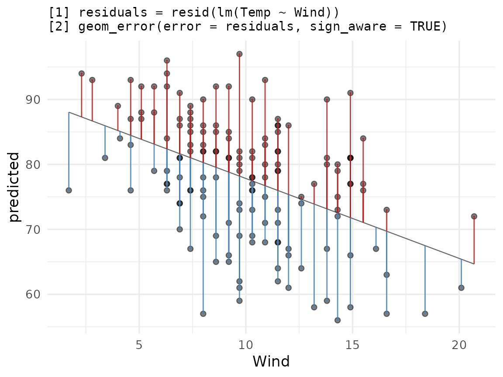
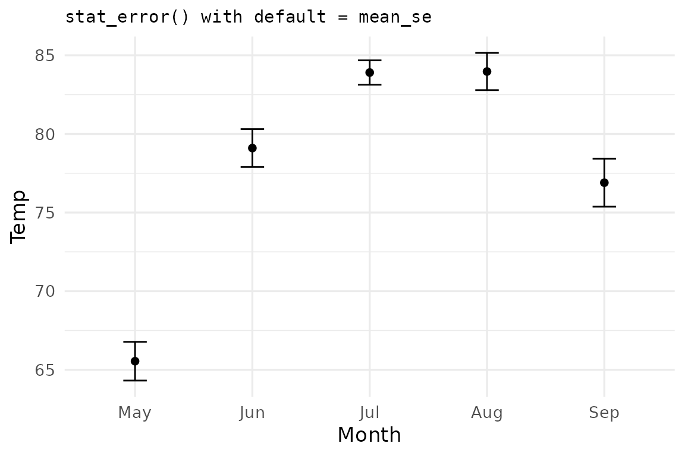
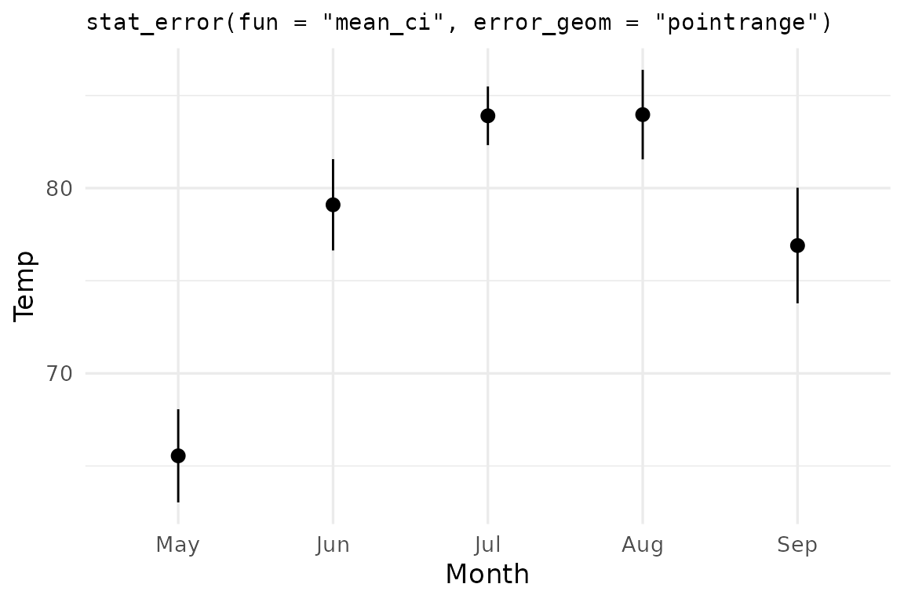
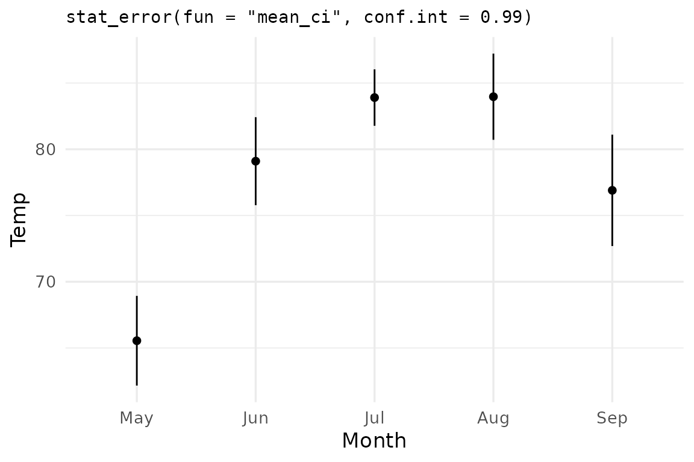
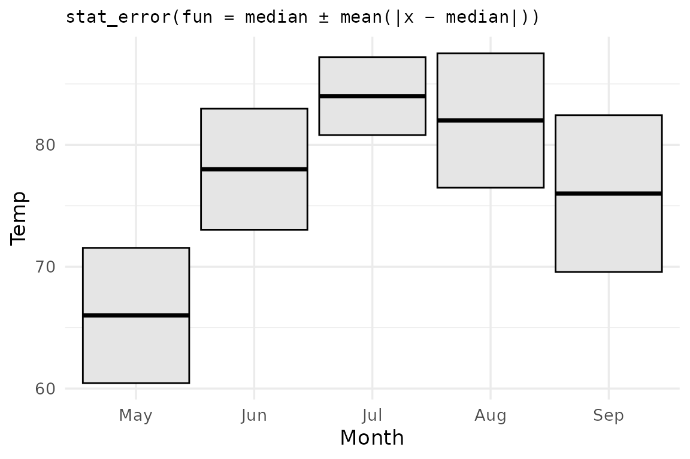
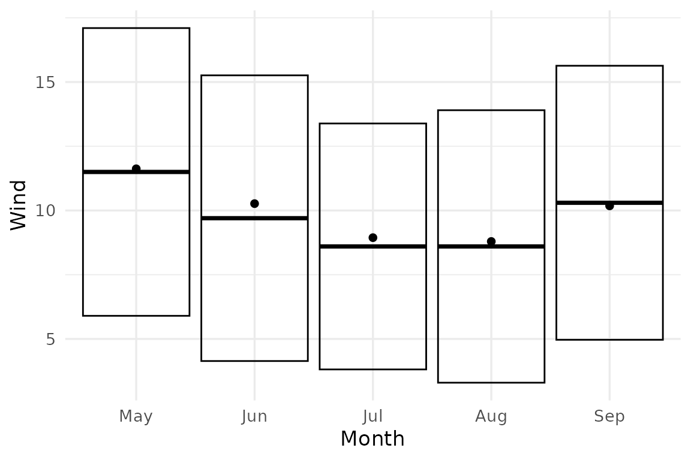

This vignette demonstrates more advanced usage of the package. For a
getting-started guide and overview of this package’s basic use case, see
vignette("ggerror").
Setup
We use airquality — Daily air quality measurements in
New York, May to September 1973.
This dataset has 153 rows with 6 columns: 4 continuous measurements, Month and Day.
data("airquality"); airq <- airquality
# It wouldn't be an R workflow without minimal data cleaning...
day_in_month <- function(day_in_month, month, year) {
days_abbr <- format(as.Date(sprintf("%d-%02d-%02d", year, month, day_in_month)), "%a")
factor(days_abbr, levels = c("Mon","Tue","Wed","Thu","Fri","Sat","Sun"), ordered = TRUE)
}
airq$Day <- day_in_month(airq$Day, airq$Month, 1973)
airq$Month <- factor(airq$Month, labels = month.abb[5:9])
More on airquality (click to expand, or type
?airquality)
airquality contains daily New York air-quality
measurements from May to September 1973. The main continuous variables
are Ozone, Solar.R, Wind, and
Temp; Month and Day identify when
each measurement was taken.
Let’s use it to show two use cases: plotting a sign-aware residual
plot and summarizing raw data with stat_error().
Residual plot with sign_aware
sign_aware = TRUE interprets the sign of
error as direction: positive values extend in the positive
axis direction, negative in the negative.
Let’s fit a linear model and see how Temp can be
explained by Wind.
model <- lm(Temp ~ Wind, data = airq)
airq_fit <- cbind(airquality[,c('Temp','Wind')],
predicted = predict(model),
residuals = resid(model)
)Let us complement the usual ggplot2 workflow for plotting residuals versus true values:
ggplot(airq_fit, aes(x = Wind, y = predicted)) +
geom_line(linewidth = 0.4, colour = "grey40") +
geom_point(aes(y = Temp), alpha = 0.5) +
geom_error(aes(error = residuals),
sign_aware = TRUE,
orientation = "x",
color_pos = "firebrick",
color_neg = "steelblue",
linewidth = 0.5,
alpha = 0.85) +
labs(title = paste(
"[1] residuals = resid(lm(Temp ~ Wind))",
"[2] geom_error(error = residuals, sign_aware = TRUE)",
sep = "\n"
))
Flexible styling:
ggerrorprovides us with per-direction styling (color) as well as global styles (alpha,linewidth, etc.). How to interpret the plot is up to you. You may want to color the direction differently, to show the direction the bar extends, rather than the sign of the error. Experiment with this by tweaking either the actual color value, or theneg/possuffix.orientation = "x"Because both axes are numeric,ggerrorcan’t infer the direction the bar should extend, so we passorientation = "x"(which extends the bar along the y axis) explicitly. When one axis is discrete, orientation is inferred.NA values vs 0: An
NAvalue draws nothing, and triggers a row-indexed warning. As inggplot2’s ecosystem, we would usually exclude invalid (missing or infinite) values before plotting. 0 is treated as any other value, and “draws” a bar of length zero (basically, nothing). UsingNAcomes in handy when we want to explicitly draw one-sided bars (seevignette("ggerror")).
Summarizing raw data with stat_error()
stat_error() follows ggplot2’s fun.data
contract: pass a summary function and it computes y,
ymin, ymax per group. Regardless of the
orientation of your plot, the summary function must return a
data frame with these exact column names.
The default summary function is mean_se (mean ± one
standard error):
ggplot(airq, aes(Month, Temp)) +
stat_error(width = 0.2) +
stat_summary(geom='point') +
labs(title = "stat_error() with default = mean_se") 
ggerror ships two summary functions. You just saw the
default, mean_se. The second is mean_ci which
computes the mean and 95% confidence interval error bars.
ggplot(airq, aes(Month, Temp)) +
stat_error(fun = "mean_ci", error_geom = "pointrange") +
labs(title = 'stat_error(fun = "mean_ci", error_geom = "pointrange")')
The conf.int argument controls the CI width —
0.95 by default, but any valid probability in
(0, 1) works:
ggplot(airq, aes(Month, Temp)) +
stat_error(fun = "mean_ci", conf.int = 0.99,
error_geom = "linerange") +
stat_summary(geom="point") +
labs(title = 'stat_error(fun = "mean_ci", conf.int = 0.99)')
Note: I combine multiple summary geoms.
ggerroris compatible withggplot2(core) and its ecosystem.
Custom summary function: median ± mean absolute deviation
You shall not be limited by my imagination. Create your own custom
summary functions, as long as they obey the rules I mentioned earlier
(returned object must be a data frame with three columns:
y, ymin, ymax and one numeric
row). R’s mad() computes the median absolute deviation from
the median. Let us use the mean absolute deviation
(from the median), and call it mae (e for
error, to avoid naming conflicts).
median as the center, mean absolute deviation from the median as the spread:
mae_summary <- function(my_vec, scale_by = 1) {
md <- median(my_vec)
mae <- mean(abs(my_vec - md)) * scale_by
data.frame(y = md, ymin = md - mae, ymax = md + mae)
}
ggplot(airq, aes(Month, Temp)) +
stat_error(fun = mae_summary, error_geom = "crossbar",
fill = "grey90") +
labs(title = "stat_error(fun = median ± mean(|x − median|))")
Custom functions can take extra parameters too —
stat_error() forwards any matching named arguments in the
same way you are used to using the ... argument. In this
example, to multiply the error by 2, you’d write
stat_error(fun = mae_summary, scale_by = 2).
Passing scale_by = 2 to stat_error
ggplot(airq, aes(Month, Wind)) +
stat_error(fun = mae_summary, scale_by = 2, error_geom = "crossbar") +
stat_summary(geom = "point")
Aside —
geom_error(stat = "error", fun = ...)is the layer-level equivalent ofstat_error(), which by default usesstat = "identity".